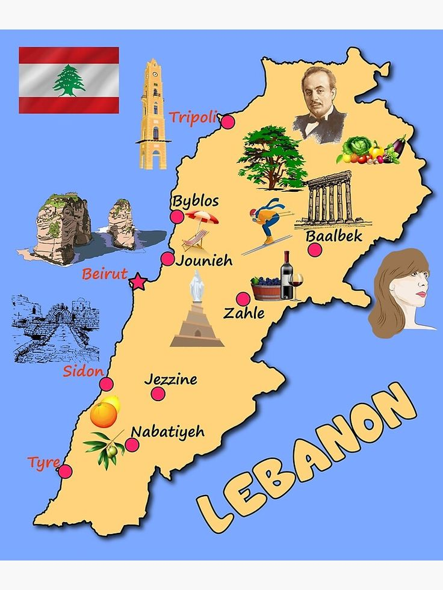
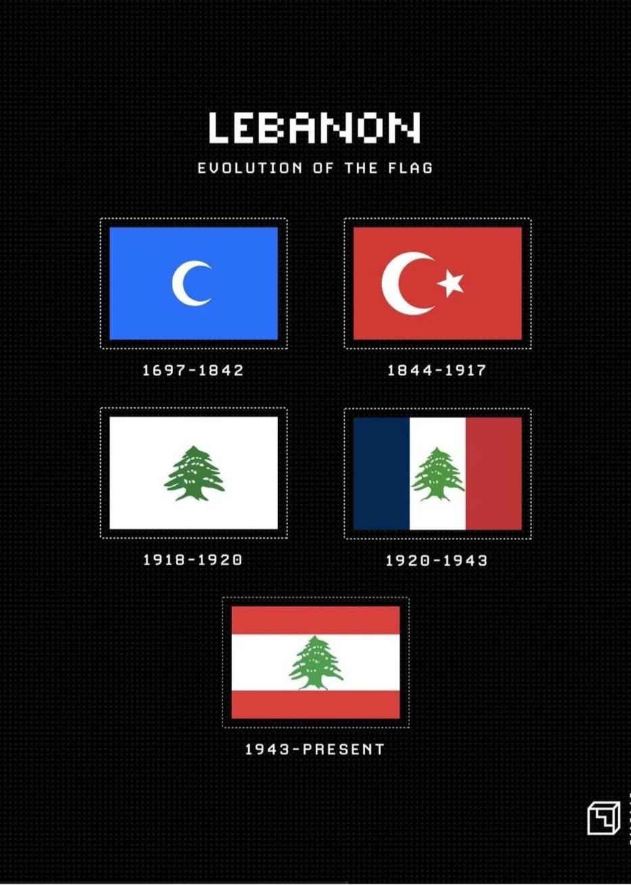
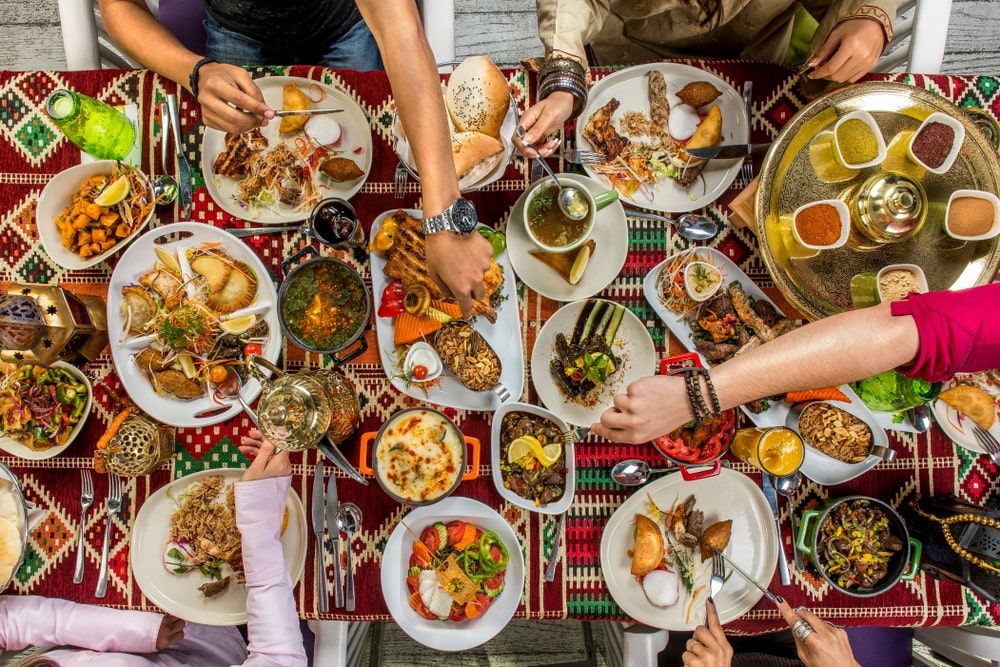
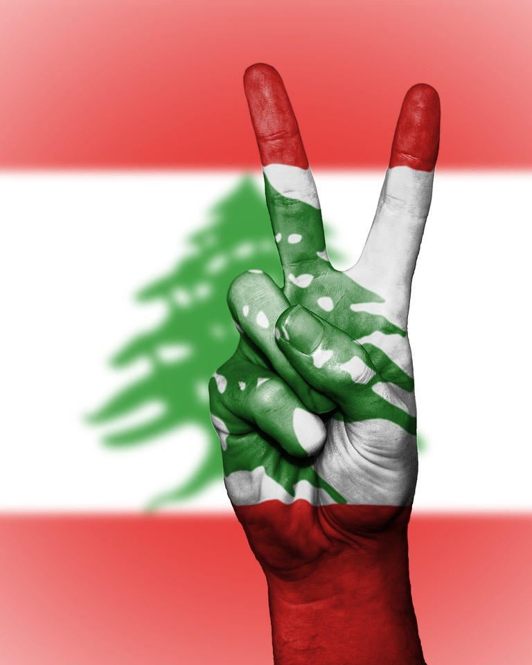
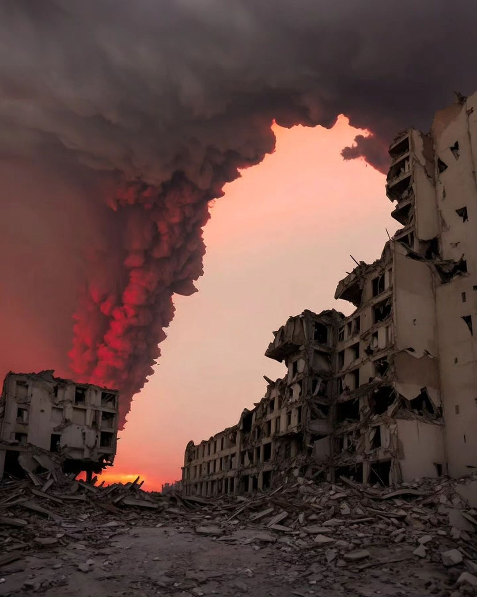

Home
Tourism Guide
Must-See Destinations
Historical Sites
Outdoor Adventures
Videos
Food & Cuisine
Food Dishes
Drinks
Food Preparation Videos
War Aftermath
War Aftermath Gallery
War Aftermath Videos
Interactive Timeline of Events
Donation
Cultural Heritage
Traditional Festivals
Traditional Crafts and Clothing
Country History
Ottoman Empire (1516–1918)
French Mandate (1920–1943)
Independence from France (1943)
Lebanese Civil War (1975–1990)
Israel-Lebanon Conflict (2006)
Lebanese Protests (October 17, 2019)
Beirut Port Explosion (August 4, 2020)
Israel-Lebanon Conflict (2024)
Contact Us
About Us
Login
Welcome to the Heart of Lebanon
Explore Our Highlights

Explore Tourism Guide

Explore Country History

Explore Food & Cuisine
Explore Cultural Heritage

Make a Donation

Explore War Aftermath